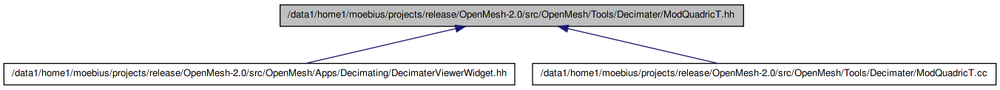

#include <float.h>#include <OpenMesh/Tools/Decimater/ModBaseT.hh>#include <OpenMesh/Core/Utils/Property.hh>#include <OpenMesh/Core/Utils/vector_cast.hh>#include <OpenMesh/Core/Geometry/QuadricT.hh>
Include dependency graph for ModQuadricT.hh:

This graph shows which files directly or indirectly include this file:

Go to the source code of this file.
Classes | |
| class | OpenMesh::Decimater::ModQuadricT< DecimaterType > |
| Mesh decimation module computing collapse priority based on error quadrics. More... | |
Namespaces | |
| namespace | OpenMesh |
Contains all the mesh ingredients like the polygonal mesh, the triangle mesh, different mesh kernels and mesh traits. | |
| namespace | OpenMesh::Decimater |
Software related to mesh decimation. | |